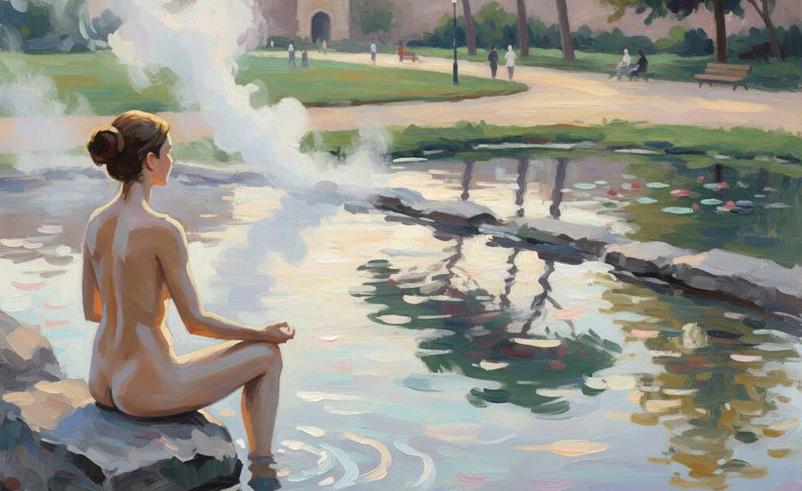

Il Corpo
Viviamo in un’epoca in cui il rumore è diventato paesaggio.
Non solo quello acustico — motori, voci, notifiche — ma il frastuono
mentale che riempie ogni spazio interiore. Siamo costantemente raggiunti
da parole, immagini, richieste di attenzione. Eppure, dietro questo
brusio collettivo, il corpo continua a parlare a bassa voce.
Solo chi rallenta può ancora udirlo.
Il silenzio non è assenza: è presenza amplificata.
Quando lo si abita davvero, ci si accorge che contiene tutto — suoni
lontani, battito, respiro, pensieri che decantano. Il silenzio è un
luogo, non un vuoto: un bene comune che abbiamo smesso di difendere e
che oggi andrebbe custodito come l’acqua o l’aria.
La Polis
Nell’antichità il respiro era sinonimo di spirito: pneuma per i Greci, qi per i Cinesi, ruah per la tradizione ebraica. Ogni cultura riconosceva in questo moto invisibile la sostanza della vita, la soglia tra corpo e coscienza. Respirare significava partecipare al ritmo del mondo, lasciarsi attraversare dal suo soffio vitale.
Oggi, immersi in un tempo che ci vuole produttivi e costantemente
reattivi, rischiamo di perdere il contatto con quella sorgente
silenziosa che ci anima. Il respiro si accorcia, la mente corre, e
l’attenzione — invece di fiorire — si consuma.
Viviamo come società in una sorta di iperventilazione collettiva: troppe
parole, troppe immagini, troppa esposizione.
Ritrovare il respiro significa ritrovare il ritmo giusto del
vivere.
A livello personale, vuol dire concedersi qualche minuto al giorno per
respirare in consapevolezza prima di rispondere a un messaggio o
affrontare una riunione: piccoli gesti che cambiano la qualità del
pensiero.
Nelle relazioni, l’ascolto profondo si manifesta nel silenzio tra due
frasi — in quella pausa in cui l’altro può sentirsi accolto e non
giudicato.
Nelle città, significa proteggere luoghi e tempi in cui il rumore non
abbia il sopravvento: un parco dove non tutto deve essere attività, una
piazza dove si possa sostare senza comprare nulla.
E a livello collettivo, ascoltare è anche ascoltare le grida della
terra: i fiumi che si prosciugano, le sorgenti che si ammalano, i suoli
che respirano a fatica.
In questo senso, il silenzio è un bene politico e ambientale: un
campo di rispetto da preservare. Non è passività, ma cura attiva; non
isolamento, ma responsabilità.
Ascoltare davvero — una persona, un luogo, una comunità — significa
restituire spazio e respiro a ciò che la fretta tende a cancellare: la
complessità, la differenza, la sfumatura.
E come accade al corpo che ritrova equilibrio solo quando il respiro
si fa profondo e continuo, così anche una comunità ritrova la propria
salute quando è capace di alternare parola e silenzio, azione e
contemplazione, decisione e ascolto.
Il silenzio non è il contrario della vita civile, ma il suo fondamento
più profondo: lo spazio interiore da cui può nascere una parola
vera.
Il Territorio
Le sorgenti del Bullicame, alle porte di Viterbo, sono un santuario
del silenzio fluido.
L’acqua termale che ribolle dal cuore della terra racconta una storia di
respiro sotterraneo e continuo: un soffio minerale che attraversa le
ere.
Dante Alighieri ne parla nella Divina Commedia, e già allora
quel luogo evocava mistero, purificazione, rinascita.
Oggi, quando ci si avvicina al Bullicame nelle prime ore del mattino,
prima che arrivino i visitatori, si può percepire un ritmo lento e
profondo: il vapore che sale, il gorgoglio sommesso dell’acqua, il
silenzio che diventa voce.
In quel paesaggio termale la natura ricorda ciò che abbiamo dimenticato:
che il calore, come l’ascolto, nasce dalle profondità invisibili.
Il Bullicame non è solo un luogo fisico, ma una metafora del respiro
collettivo: la terra che inspira e espira, offrendo quiete a chi si
ferma davvero.
E poi tornare in città. Nel parco di Prato Giardino, all’ombra dei
pini e dei platani centenari, in un viale che si apre accanto alle mura
di Viterbo, scopriamo un silenzio diverso — quello della pietra e
dell’erba che convivono, della città che rallenta per un attimo. Qui,
tra una panchina e un laghetto, il nostro passo risuona meno e ascolta
di più. Non è solo camminare nel verde, è un ritorno al respiro che
abita anche il selciato, le mura e gli alberi urbani.
Così come l’acqua del Bullicame insegna a restare, Prato Giardino ci
invita a percepire che anche la città può essere luogo di ascolto, che
la postura dell’attenzione non ha bisogno di abbandonare l’asfalto per
trovare la profondità.
Camminare lentamente sotto gli alberi, fermarsi un momento al margine di
un prato: sono questi i gesti che ricollocano il corpo nel suo contesto
— umano, vivo, urbano — e che ci ricordano che la radice può nascere
anche dentro una città che sa ascoltare.
L’Azione
Siediti per qualche minuto in un luogo tranquillo — può essere un
parco, una stanza o una sorgente se ti trovi vicino al Bulicame.
Chiudi gli occhi e porta l’attenzione al respiro senza cercare di
cambiarlo.
Osserva solo come entra e come esce.
Poi lascia che si allarghi: che la tua ispirazione diventi ascolto del
mondo e la tua espirazione un gesto di restituzione.
Ascoltare il proprio respiro è ascoltare la vita stessa che passa
attraverso di te.
È un modo per ritrovare la misura, per ricordare che la calma non è
inerzia, ma precisione del sentire.
La Sintesi di Ipotesi
Il silenzio non è un lusso per pochi, ma una responsabilità di
tutti.
È lo spazio dove l’umano si rigenera, dove le parole tornano ad avere
peso e il corpo a essere tempio di ascolto.
Ogni comunità dovrebbe difendere i propri luoghi di quiete — naturali o
interiori — come difende le proprie sorgenti d’acqua.
Perché senza silenzio non c’è ascolto e senza ascolto nessuna vera relazione, né con gli altri né con la terra. E così, come il Bullicame continua a ribollire nel suo respiro antico, anche noi possiamo imparare a custodire quel ritmo interiore che ci restituisce alla vita.
(Prossimo appuntamento: “Verticalità – L’asse tra cielo e pietra”, un viaggio tra le navate della Cattedrale di San Lorenzo e la postura del cuore.)
Barbara Matteucci